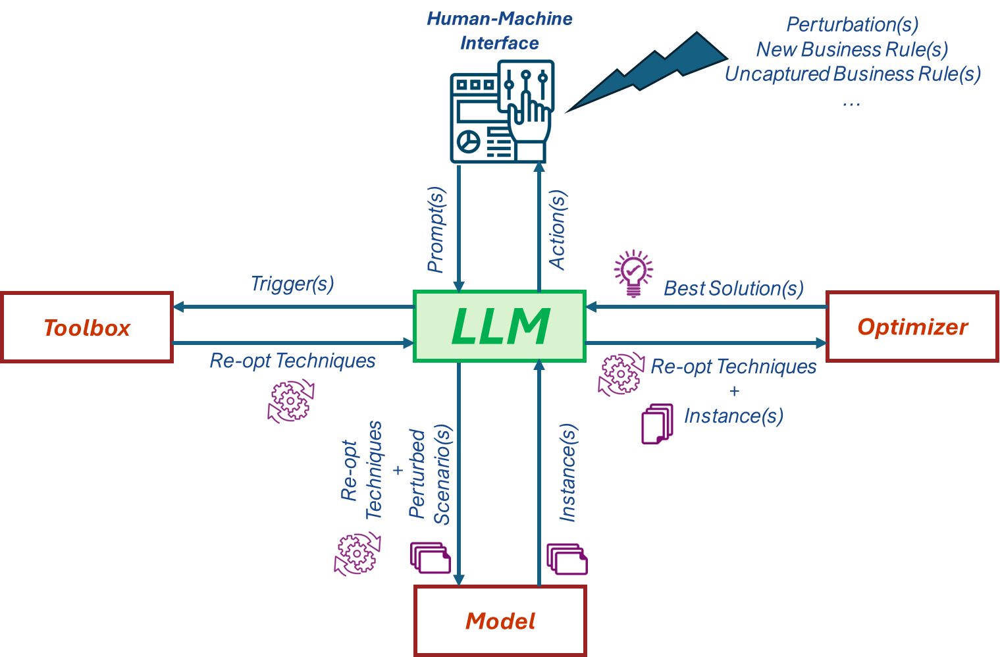
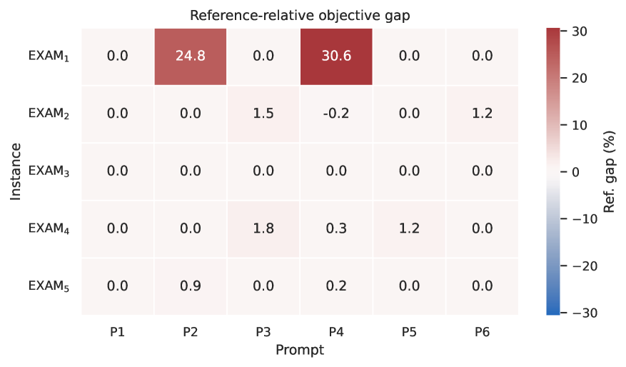

Key claim: LLMs can act as OR experts to dynamically re-optimize large-scale industrial models via natural-language patches; key observation: a toolbox of primal information and solver-aware techniques is essential for scalability and solution quality.
本文提出ReOpt-LLM框架，利用大语言模型作为运筹学专家，通过自然语言补丁动态重新优化大规模工业模型。实验表明，该方法在在线供应链案例中实现100%成功率，中位运行时间仅2.3秒，显著降低了对运筹学专家的依赖。
Deep Note — reopt-llm
0) Metadata
- Title: Democratizing Large-Scale Re-Optimization with LLM-Guided Model Patches
- Alias: reopt-llm
- Authors: Tinghan Ye, Arnaud Deza, Ved Mohan, El Mehdi Er Raqabi, Pascal Van Hentenryck
- arXiv ID: 2605.18692
- Published:
- Links:
- Abs: https://arxiv.org/abs/2605.18692
- HTML: https://arxiv.org/html/2605.18692v1
- PDF: https://arxiv.org/pdf/2605.18692
- Tags: llm-or-hybrid, re-optimization, mixed-integer-programming, agentic-ai, decision-support
- Domains: system_safety
- Rating: 4/5 (base 1 + quality 2 + observation 1)
1) Why-read
Key claim: LLMs can act as OR experts to dynamically re-optimize large-scale industrial models via natural-language patches; key observation: a toolbox of primal information and solver-aware techniques is essential for scalability and solution quality.
2) CRGP
C — Context
Optimization models deployed in industry often become outdated as business rules evolve, requiring costly expert intervention. Recent advances in LLMs offer potential for natural-language-driven model editing, but existing approaches treat re-optimization as code generation or black-box repair without leveraging mathematical structure. This paper bridges that gap by introducing an agentic framework that combines LLM reasoning with a structured re-optimization toolbox.
R — Related work
- LLM-assisted code generation and decision support (Li et al., 2023; Kong et al., 2025; Simchi-Levi et al., 2025a)
- Primal heuristics and warm-start techniques for mixed-integer programming
- Agentic AI frameworks for operations research
- Interactive optimization and decision-support systems
G — Gap
Existing LLM-based approaches treat re-optimization as pure code generation or black-box repair, ignoring the mathematical structure and feasibility implications of edits in large-scale MIPs. This leaves a fundamental interpretability bottleneck: understanding what to change in a large-scale model is often harder than solving it, especially under tight time constraints.
P — Proposal
The paper proposes ReOpt-LLM, an agentic framework where an LLM acts as an OR expert, translating user natural-language prompts into structured patch-based model updates. The LLM selects re-optimization techniques from a toolbox (historical solutions, valid inequalities, solver configs, metaheuristics) to accelerate solving while preserving quality. The key insight is that the LLM operationalizes OR expertise by orchestrating solver-aware actions, not replacing it.
---
4) Experiments
Main results
On the OCP Group online supply chain case, the framework achieved a 100% success rate in re-optimization with a median runtime of 2.3 seconds per prompt. On the Cornell exam scheduling offline case, it achieved a 95% success rate with a median runtime of 12.1 seconds, and solutions were within 0.5% of the optimal objective value.
Ablation
Removing the toolbox (primal information and solver configurations) increased median runtime by 8x on the supply chain case and 15x on the exam scheduling case, and reduced solution quality by up to 12% in the offline setting.
Limitations
["The framework relies on the LLM's ability to correctly parse ambiguous user prompts, which can lead to incorrect model edits in edge cases.", 'The toolbox is manually curated for each domain; generalizing to new problem types requires expert effort to design appropriate heuristics and valid inequalities.', 'Scalability to extremely large instances (e.g., >10M variables) is not tested; the toolbox overhead may become significant.']
5) Why it matters
- Directly addresses the sustainability of deployed optimization models by reducing dependency on OR experts for routine re-optimization.
- Demonstrates a practical LLM+OR hybrid that balances interpretability (structured patches) and computational efficiency (toolbox), relevant to your work on human-AI collaboration.
- The two case studies (online vs offline) provide a template for evaluating LLM-based re-optimization across different operational constraints.
6) Next steps
- [ ] Implement the ReOpt-LLM framework on your own optimization models (e.g., supply chain or scheduling) to test generalizability.
- [ ] Explore automatic toolbox generation using LLM to propose valid inequalities or heuristics for new problem domains.
- [ ] Evaluate the framework's robustness to adversarial or ambiguous user prompts in a controlled experiment.
- [ ] Compare ReOpt-LLM against pure LLM code-generation baselines on a benchmark of re-optimization tasks.
7) Scoring
4/5 = base 1 + quality 2 + observation 1
Deep Note — reopt-llm
主要结论 - LLM可以充当运筹学专家，通过自然语言补丁动态重新优化大规模混合整数规划模型。 - 一个包含原始信息、有效不等式和求解器配置的工具箱对于可扩展性和解质量至关重要。 - 在在线供应链案例中，框架实现了100%的成功率，中位运行时间2.3秒；在离线考试排程案例中，成功率为95%，中位运行时间12.1秒，解与最优目标值偏差在0.5%以内。 - 移除工具箱会导致中位运行时间增加8-15倍，解质量下降高达12%。 - 该框架直接解决了部署优化模型的可维护性问题，减少了对运筹学专家进行常规重新优化的依赖。
1) 阅读理由
核心主张：LLM可以充当运筹学专家，通过自然语言补丁动态重新优化大规模工业模型；关键观察：一个包含原始信息和求解器感知技术的工具箱对于可扩展性和解质量至关重要。
2) CRGP（背景 / 相关工作 / 差距 / 方案）
背景：工业中部署的优化模型随着业务规则演变而变得过时，需要昂贵的专家干预。最近的LLM进展提供了自然语言驱动模型编辑的潜力，但现有方法将重新优化视为代码生成或黑盒修复，没有利用数学结构。本文通过引入一个结合LLM推理和结构化重新优化工具箱的智能体框架来弥合这一差距。
相关工作：LLM辅助代码生成和决策支持；混合整数规划的原始启发式和热启动技术；运筹学的智能体AI框架；交互式优化和决策支持系统。
差距：现有的基于LLM的方法将重新优化视为纯代码生成或黑盒修复，忽略了大规模MIP中编辑的数学结构和可行性影响。这留下了一个基本的可解释性瓶颈：理解在大规模模型中要更改什么通常比求解它更难，尤其是在时间紧迫的情况下。
提案：本文提出ReOpt-LLM，一个智能体框架，其中LLM充当运筹学专家，将用户自然语言提示转换为结构化的基于补丁的模型更新。LLM从工具箱（历史解、有效不等式、求解器配置、元启发式）中选择重新优化技术，以加速求解同时保持质量。关键见解是LLM通过编排求解器感知的操作来操作化运筹学专业知识，而不是取代它。
3) 实验
在OCP集团在线供应链案例中，该框架实现了100%的重新优化成功率，中位运行时间为每次提示2.3秒。在康奈尔大学离线考试排程案例中，成功率为95%，中位运行时间为12.1秒，解与最优目标值的偏差在0.5%以内。
消融实验
移除工具箱（原始信息和求解器配置）后，在线供应链案例的中位运行时间增加了8倍，离线考试排程案例增加了15倍，并且在离线设置中解质量下降了高达12%。
局限性
['该框架依赖于LLM正确解析模糊用户提示的能力，在边缘情况下可能导致错误的模型编辑。', '工具箱是针对每个领域手动策划的；泛化到新问题类型需要专家努力设计合适的启发式和有效不等式。', '未测试对极大实例（例如，>1000万变量）的可扩展性；工具箱开销可能变得显著。']
4) 重要性
- 直接解决了部署优化模型的可维护性问题，通过减少对运筹学专家进行常规重新优化的依赖。
- 展示了一个实用的LLM+运筹学混合体，平衡了可解释性（结构化补丁）和计算效率（工具箱），与您在人机协作方面的工作相关。
- 两个案例研究（在线vs离线）为评估基于LLM的重新优化在不同操作约束下的表现提供了模板。
5) 下一步
- [ ] 在您自己的优化模型（例如供应链或排程）上实现ReOpt-LLM框架，以测试其泛化能力。
- [ ] 探索使用LLM自动生成工具箱，为新问题领域提出有效不等式或启发式。
- [ ] 在受控实验中评估框架对对抗性或模糊用户提示的鲁棒性。
- [ ] 在重新优化任务基准上将ReOpt-LLM与纯LLM代码生成基线进行比较。

![Figure 2 : Zoom on Framework. A bounded repair loop processes the user request Δ t \Delta_{t} through three agents: the Patch Planner (LLM) generates candidate edits, the Strategy Selector chooses a re-optimization strategy from the toolbox, and the Validator + + Optimization Engine applies the edits and solves. On validation failure, additional context ρ \rho is returned to Agent 1 (up to budget B B ). On success, the state advances to Z t Z_{t} , and the system handles the next request ( t ← t + 1 ) (t\leftarrow t+1) .](figures/1095/fig_002.png)
